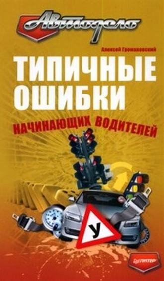

Успешно сдав экзамен в ГИБДД и получив заветное удостоверение, но вы не сразу станете хорошим водителем и наверняка будете допускать еще немало промахов. Однако лучше учиться на чужих ошибках, чем на собственных. Предлагаемая книга ориентирована именно на начинающих водителей. В ней рассмотрены типичные ситуации, в которые попадают новички, поэтому она будет полезна и интересна каждому, кто недавно получил права.Советы бывалих из автомобильной жизни :
| Памятка автомобилисту. | Шины и шипы. | Как заводить машину зимой . | Как завести машину без ключа. | Как завести машину с толкача. | Как завести машину без стартера. | Как правильно "прикурить" машину. | Езда без аккумулятора. | Почти все об аккумуляторе. | Общий обзор холодного пуска машины. | Откровения автоугонщика. | Как правильно мыть машину. | Как заряжать аккумулятор. | Об этике водителя. | Экономить на топливе. | Советы на ходу. | Экономная езда. | О тормозах. | Езда в жару. | Пить или не пить ?. | О подушках безопасности. |